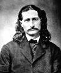

Vahşi Bill Hickok (1837–1876) ilk bakışta iyi bir adam gibi görünüyordu. İç Savaş sırasında Birlik Ordusu için çarpışmış, hayatının büyük bir bölümünde kanun adamı rozeti taşımıştı. Batıdaki birkaç kasabada şeriflik yapmış, düzeni ve kanunu korumakta nadiren başarısız olmuştu. En azından düzeni korumakta!

Hickok aynı zamanda Amerika’nın batısındaki en namlı silahşörlerden biriydi. Arkasında haksız yere öldürdüğü düzinelerce ceset bırakmıştı. Kumarbaz, düellocu ve hızlı bir silahşördü. Onunla ilgili pek çok Batı efsanesi vardı. Çok hızlı silah çekiyordu ve pokerde çok talihliydi. Ancak bu talihi en sonunda onun hayatına mal olacaktı.
James Butler Hickok, İllinois’te doğmuştu. Yirmi beş yaşına geldiğinde çoktan cinayetle suçlanmıştı bile. Nebraska’da birkaç kişiyi öldürmüş, ancak jüri nefsi müdafaa iddiasına inanarak onu beraat ettirmişti. İç Savaş sırasında Kuzey’in safında yer aldı. Bir öncü ve bazen de casus olarak görev yaptı.
Savaşın ardından Hickok ilk düellosundan zaferle çıktı. Bu tarz silahlı düellolar kovboy filmleriyle ölümsüzleşecekti. Missouri’de eski bir Konfederasyon askeri ile karşılaştı. Akşamüstü kasaba meydanında yüz yüze geldiklerinde Hickok ondan hızlı davrandı. Olaydan sonra tutuklanmasına rağmen yine de hüküm giymeden kurtulmayı başardı.
Hickok’un ünü röportajlarında yüz kişiyi öldürdüğünü söyleyince daha da arttı. William “Buffalo Bill” Cody (1846–1917) ile birlikte maceralarını anlatan bir oyunda bile yer aldı. Sahneye üzerinde geyik derisi ve belinde çift altı patlarıyla çıkınca Batılı silahşör tiplemesinin cisimleşmiş sembolü haline geldi.
1870’lerde Kansas’taki çeşitli kasabalarda şeriflik yaptı. 1876’da Güney Dakota’ya gitti. Black Hills’teki altına hücüm sırasında zengin olmayı umuyordu.
2 Ağustos 1876’da Deadwood Kasabası’ndaki Salon No. 10’u ziyaret etti. Poker oynamaya başladı. Eli iyiydi. İki koz ve iki sekizliği vardı. Ama yine de şansı yaver gitmedi. Kartları ile ilgilendiği sırada Jack McCall (1853–1877) tarafından sırtından vuruldu. Hickok bu sırada otuz dokuz yaşındaydı. McCall’ın amacı tartışmalıydı. Mahkemede verdiği ifadeye göre Hickok’u, kardeşinin intikamını almak için öldürmüştü. Bir başka teoriye göre ise Hickok’un o sabah kendisine küfretmesine sinirlenmişti. Kimilerine göre ise sadece sarhoştu. McCall mahkum oldu ve ertesi yıl asıldı.
Ek Bilgiler
1- 2008 yılında Demokrat başkan adayı Barack Obama (1961-), Kansas doğumlu annesi Ann Dunham (1942–1995) üzerinden Hickok’un uzak bir akrabası olduğunu söyledi.
2- HBO dizisi “Deadwood”da Hickok, Keith Carradine (1949–) tarafından canlandırılmıştı.
3- Pokerde iki koz ve iki sekizlik eller “ölü adamın eli” olarak anılır ve pek çok kumarbaz tarafından kötü şans olarak kabul edilir.